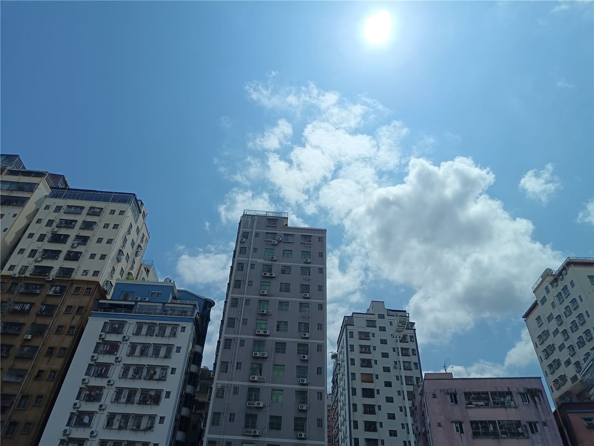

“중국 경제 견실하게 전진”… 세계에 발전 자신감 발신
중국이 자국 경제가 견실하게 나아가고 있으며, 세계에 지속적으로 발전의 자신감을 주고 있다고 밝혔다. 경제 흐름에 대한 낙관적 진단이 제시됐다.
임숙분 기자 · 2026.07.19
橋중국

환구망은 중국 경제가 견실하게 전진하며 세계에 발전의 자신감을 불어넣고 있다는 취지의 논평을 실었다. 대내외 여건 속에서도 성장 동력을 유지하고 있다는 평가가 담겼다.
광고 문의 · 300×250경제의 견실함은 성장률뿐 아니라 고용·소비·투자 등 여러 지표를 함께 살펴 판단하게 된다. 대외 여건이 불확실한 시기일수록 내수의 회복력이 중요하게 거론된다.
세계 경제는 여러 나라의 성장세와 교역이 서로 맞물려 움직인다. 주요 경제권의 흐름은 국제 무역과 공급망을 통해 다른 나라에도 영향을 준다.
다만 경제 전망은 기관과 관점에 따라 다양하게 제시된다. 낙관과 신중이 함께 존재하는 만큼, 여러 지표를 균형 있게 살피는 시각이 필요하다.
華橋時報는 특정 국가의 경제를 과대·과소평가하지 않으며, 발표된 진단을 중립적으로 전한다. 세계 경제가 안정 속에서 함께 성장하는 방향으로 나아가기를 바라는 관점에서 소식을 전한다.
출처·참고 (사실 확인용 — 본문은 직접 재작성)
· 환구망
· 환구망